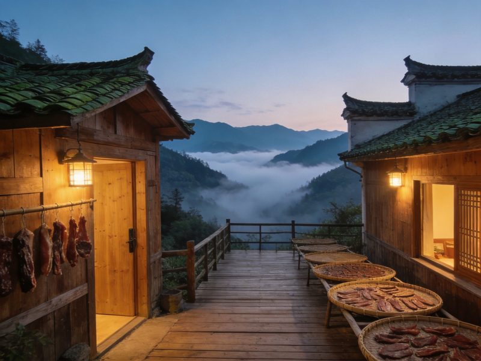

🏔️ 木梨硔 · MULIGONG CLOUD VILLAGE
木梨硔 · 云端里的皖南古村全攻略
黄山脚下藏着一座建在云端山脊上的古村——木梨硔。三面悬崖、一面缓坡，青瓦白墙的徽派民居沿海拔近千米的山坡层层叠叠，清晨云海从村下涌动，把整座村庄托在云端，因此得名「云上村落」。这里不通公路，要把车停在山脚，徒步爬一段石头台阶才能进村。住一晚山顶木屋，看云海日出、悬崖观景台、星空银河，吃一顿土灶瓦罐鸡，是逃离城市、深度放空的最佳去处。本文含 1 日/2 日双方案、怎么去、住宿、美食、预算与避坑全讲清。
📍 目的地：安徽黄山 · 休宁溪口镇
👥 1–6 人自由行
⏱️ 1 日 / 2 日 双方案
⛰️ 云海日出 · 徒步进村
⚡1 日快充 · 云端打卡
时间紧也能一睹云端村落的风采：上午到山脚、徒步进村，在悬崖观景台看云海，午后原路下山返程。
👥 1–3 人适配：进村需徒步爬坡，带老人小孩或腿脚不便者建议选 2 日慢住、分次休息；云层位置随天气变化，能否看到云海要看运气。
🗺️ 行程安排
-
上午 · 山脚停车场 → 徒步进村 → 悬崖观景台
🚗 自驾停山脚「木梨硔停车场」
🥾 步行约 20–40 分钟石头台阶进村🏔️ 悬崖观景台俯瞰全村民居
⚠️ 石板路窄且湿滑，务必穿防滑鞋；进村一路爬升，行李精简、轻装上阵。
-
中午 · 村内土灶农家菜 + 木屋休整
🍲 土灶瓦罐鸡 / 笋干烧肉☕ 门前观景台喝茶发呆
💡 村里多为民宿+农家乐自营，食材以本地土鸡、山笋、时蔬为主，味道实在又对胃。
-
下午 · 观景台看云海 → 返程下山
🌄 村高处/观景台远眺云海与群山🚶 原路下山回停车场
💡 下午云系常变，蹲守一阵更易等到云海翻涌；返程前记得补水、备好体力下山。
🌿2 日慢住 · 山谷放空
在云端住一晚才是木梨硔的正确打开方式——傍晚看日落染红村舍，夜里在观景台数星星，清晨 5 点等一场云海日出，把一天的疲惫都留在山里。
👥 1–3 人适配：村内木屋民宿多为村民自营，200–600 元能住到带观景台的高处房；夜宿是体验核心，提前订房可确保观景位。
🗺️ 行程安排
-
DAY 1 · 进村 → 悬崖观景台看日落 → 夜宿云端
🥾 徒步进村🌄 观景台日落 · 整村染金
🍲 土灶瓦罐鸡晚宴🌌 夜里观景台看星空银河
💡 订高处带平台民宿，晚上可以独享云海之上的星空；山上无光污染，银河肉眼可见。
-
DAY 2 · 云海日出 → 村内漫游 → 下山返程
🌅 清晨 5 点观景台 / 门前看云海日出🏘️ 村巷漫步·远眺层叠民居
🚶 午前下山回停车场
⚠️ 云海日出受天气影响大，出发前看天气预报、选晴天或多云的清晨；下山注意防滑。
⭐木梨硔核心看点 · 单独详览
把这几个最有辨识度的点单独拎出来说清楚——看什么、为什么出名、怎么玩最值。
云端村落 · 云海托举的古村
全景
云端村落 · 云海托举的百年古村
木梨硔建在休宁溪口镇海拔约 700 米的山脊上，三面悬崖、一面缓坡，近百幢徽派民居沿山坡层层叠叠分布。清晨云海从村下山谷翻涌而上，把整座村子托在云端，形成「天空之城」般的奇观，因此被称为「云上村落」。
👍 必去理由：木梨硔最震撼的一张名片。晴天是层叠徽村，雨后清晨是云海托村，自带仙气光环。
悬崖观景台 · 云海之上
观景
悬崖观景台 · 云海日出最佳机位
村外悬崖边建有木质观景台，正对脚下云海与层叠的民居屋顶，是木梨硔看云海、看日出、看星空的黄金点位。清晨云雾从山谷涌来漫过栏杆，人在云上，随手一拍都是大片。
👍 必去理由：整座村庄最出片的地方。清晨与雨后概率最高，建议 5 点前守候，看完日出顺道下山。

徽派木屋 · 云端栖居
宿村
徽派木屋民宿 · 住在云里
村内民宿多为青瓦土墙的徽派木屋，门口常搭着伸出悬崖的木质观景平台。白天坐在平台上看云海喝茶，夜里躺床上（或天窗）看星空，清晨被第一缕晨光照醒——这种「住在云里」的体验，是木梨硔区别于多数徽州古村的核心。
👍 必去理由：不宿村等于白来。订高处带平台/天窗的房间，才能把云海与星河都装进枕边。
🚗怎么去：交通全解
木梨硔不通公路，无论自驾还是公共交通，最后都要停在山脚、徒步进村，这是它「云端避世」的前提，也是进村唯一的难度所在。
木梨硔自驾/高铁两种交通方式对比
| 方式 | 🚗 自驾（首推） | 🚄 高铁+接驳 |
|---|
| 时长/成本 |
导航「木梨硔停车场」或「休宁木梨硔」；江浙沪/黄山出发约 1.5–3h 可达山脚 |
黄山北站或休宁县城乘班车/包车到溪口镇，再叫车到山脚停车场 |
|---|
| 进村方式 |
✔ 自驾停山脚停车场后，徒步爬 20–40 分钟石头台阶进村 |
同上：山脚停车后徒步进村，不可直接开到村里 |
|---|
| 注意 |
山路狭窄急弯多，新手驾驶务必减速；旺季车位紧张建议早到 |
末班接驳车较早，务必留足徒步与返程时间 |
|---|
| 💡 一句话建议：自驾到山脚最方便；无论哪种方式，木梨硔的「最后一公里」都是一段值得的徒步，轻装缓行、扶好栏杆。 |
|---|
🥾 徒步提示：进村石板路较窄且有坡度，雨天湿滑，一定要穿防滑运动鞋、慢行看路；带老人小孩可走走歇歇，不赶时间。
🏨住宿推荐
村内民宿多为村民自营的徽派木屋，高处带观景平台/天窗的房间是首选，夜宿云端看星空是核心体验。
经济型
村内农家客栈
约 150–300 元/晚 · 人均 80–160
青瓦土墙的简单木屋或标间，干净卫生、管饭管住，适合预算型与背包客。
观景体验
高处观景平台房
约 300–600 元/晚 · 人均 150–300
位于村高处、带伸出悬崖的木平台或天窗，躺着看云海星空，是宿木梨硔首选。
全含套餐
民宿包吃住套餐
约 400–700 元/人·晚（含三餐）
村内民宿多含土灶三餐，瓦罐鸡、笋干、时蔬一站吃齐，省心又省事。
🍲木梨硔必吃清单
徽州山村风味，食材以本地土鸡、山笋、时蔬为主，土灶现做最地道。
💰预算参考（人均）
村内住宿多为包吃住套餐，区间为保守–宽松，实际以选择为准。
木梨硔1日与2日方案人均预算对比
| 项目 | 1日快充版 | 2日慢住版 |
|---|
| 大交通（黄山/周边往返人均） | 约 60–150 | 约 60–200 |
|---|
| 门票/进村 | 无门票 · 停车费约 10–20 | 无门票 · 停车费约 10–20 |
|---|
| 住宿 | —（当日往返） | 包吃住 400–700 |
|---|
| 餐饮 | 约 60–120 | 含在图内 |
|---|
| 村内小交通 | 约 20–60 | 约 20–80 |
|---|
| 合计 · 人均 | 约 180–350 | 约 450–900 |
|---|
💡 省法：木梨硔本身无门票，最大开销是住宿与餐饮，选包吃住套餐最划算；淡季（非节假日）民宿价格更低、人更少、云海更安静。
🧭避坑 & 实用贴士
- 轻装进村：进村要徒步爬坡且无车直达，务必精简行李，把重物留在车内；带老人小孩者量力而行。
- 穿防滑鞋：石板路窄、雨天湿滑，穿运动鞋/防滑鞋、扶好栏杆慢行，下山尤其注意。
- 云海看天气：云海日出受天气影响大，出发前看预报，选晴天或多云的清晨，雨后初晴概率最高，不必强求一次看到。
- 日出要早到：观景台热门机位早晨易被占，建议 5 点前守候；住高处带平台房的民宿可以足不出户看云海。
- 提前订房：旺季/节假日村内房间紧张，且村居多为村民自营、条件质朴，睡眠浅者备耳塞、对朴素材质有心理预期。
- 尊重村居：村民家门口常有晒物与劳作，文明游览、不扰民，随手带走垃圾，保护这方云上净土。